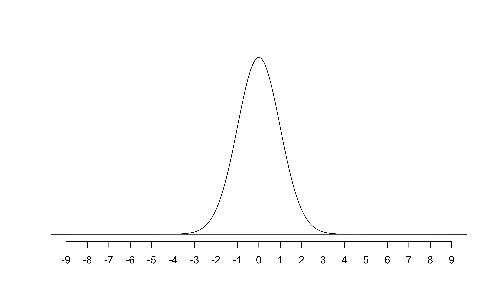
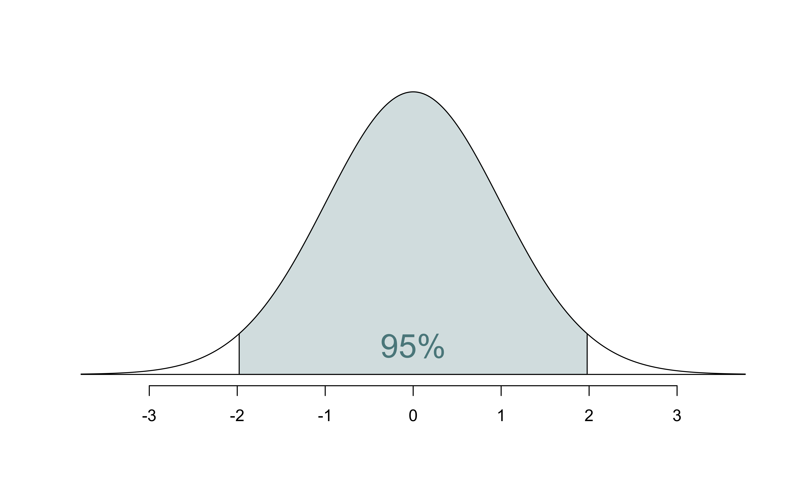
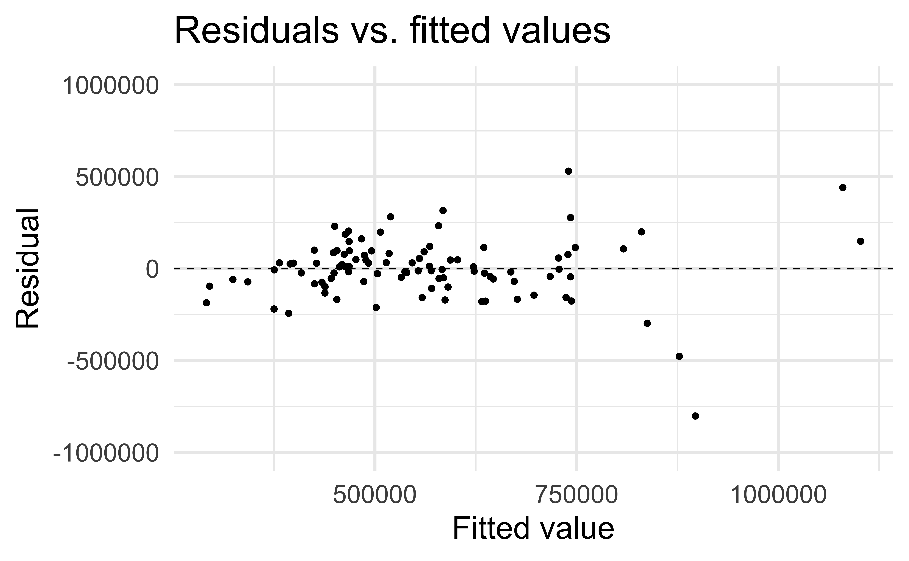
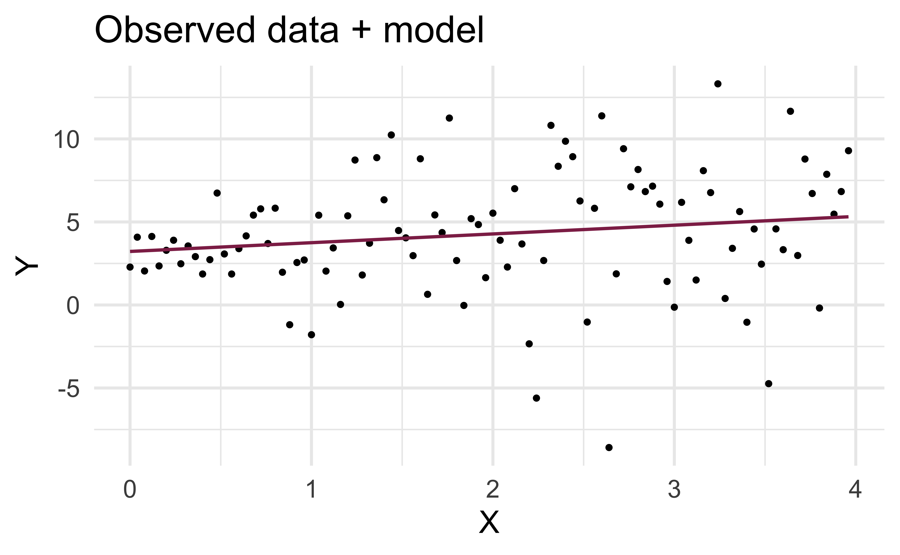
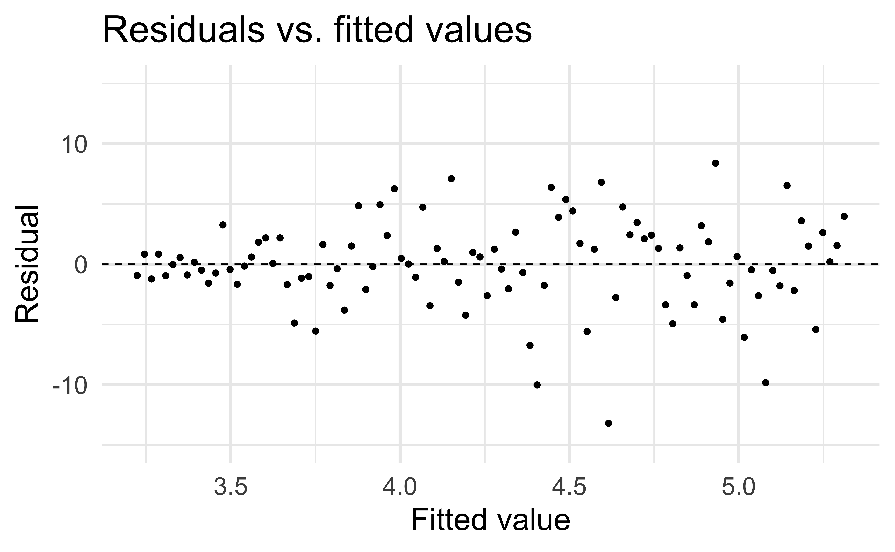
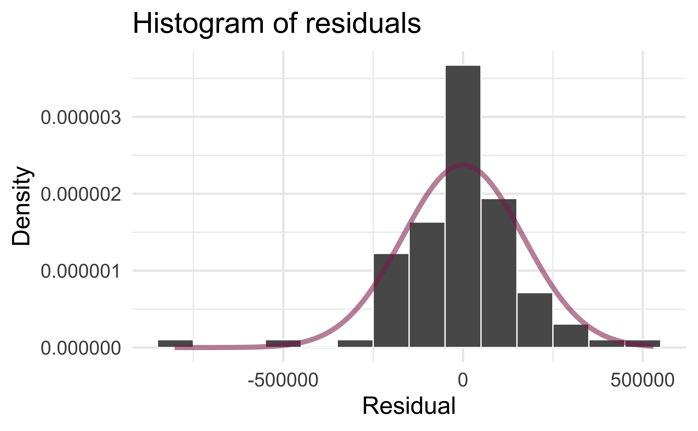

# load packages
library(tidyverse) # for data wrangling and visualization
library(tidymodels) # for modeling
library(openintro) # for the duke_forest dataset
library(scales) # for pretty axis labels
library(knitr) # for pretty tables
library(kableExtra) # also for pretty tables
library(patchwork) # arrange plots
# set default theme and larger font size for ggplot2
ggplot2::theme_set(ggplot2::theme_minimal(base_size = 20))SLR: Model diagnostics
STA 210 - Spring 2022
Welcome
Computational setup
Mathematical models for inference
The regression model, revisited
df_fit <- linear_reg() %>%
set_engine("lm") %>%
fit(price ~ area, data = duke_forest)
tidy(df_fit) %>%
kable(digits = 2)| term | estimate | std.error | statistic | p.value |
|---|---|---|---|---|
| (Intercept) | 116652.33 | 53302.46 | 2.19 | 0.03 |
| area | 159.48 | 18.17 | 8.78 | 0.00 |
HT for the slope
Hypotheses: \(H_0: \beta_1 = 0\) vs. \(H_A: \beta_1 \ne 0\)
. . .
Test statistic: Number of standard errors the estimate is away from the null
\[ T = \frac{\text{Estimate - Null}}{\text{Standard error}} \\ \]
. . .
p-value: Probability of observing a test statistic at least as extreme (in the direction of the alternative hypothesis) from the null value as the one observed
\[ p-value = P(|t| > |\text{test statistic}), \]
calculated from a \(t\) distribution with \(n - 2\) degrees of freedom
HT: Test statistic
| term | estimate | std.error | statistic | p.value |
|---|---|---|---|---|
| (Intercept) | 116652.33 | 53302.46 | 2.19 | 0.03 |
| area | 159.48 | 18.17 | 8.78 | 0.00 |
\[ t = \frac{\hat{\beta}_1 - 0}{SE_{\hat{\beta}_1}} = \frac{159.48 - 0}{18.17} = 8.78 \]
HT: p-value
| term | estimate | std.error | statistic | p.value |
|---|---|---|---|---|
| (Intercept) | 116652.33 | 53302.46 | 2.19 | 0.03 |
| area | 159.48 | 18.17 | 8.78 | 0.00 |

Understanding the p-value
| Magnitude of p-value | Interpretation |
|---|---|
| p-value < 0.01 | strong evidence against \(H_0\) |
| 0.01 < p-value < 0.05 | moderate evidence against \(H_0\) |
| 0.05 < p-value < 0.1 | weak evidence against \(H_0\) |
| p-value > 0.1 | effectively no evidence against \(H_0\) |
Important
These are general guidelines. The strength of evidence depends on the context of the problem.
HT: Conclusion, in context
| term | estimate | std.error | statistic | p.value |
|---|---|---|---|---|
| (Intercept) | 116652.33 | 53302.46 | 2.19 | 0.03 |
| area | 159.48 | 18.17 | 8.78 | 0.00 |
- The data provide convincing evidence that the population slope \(\beta_1\) is different from 0.
- The data provide convincing evidence of a linear relationship between area and price of houses in Duke Forest.
CI for the slope
\[ \text{Estimate} \pm \text{ (critical value) } \times \text{SE} \]
. . .
\[ \hat{\beta}_1 \pm t^* \times SE_{\hat{\beta}_1} \]
where \(t^*\) is calculated from a \(t\) distribution with \(n-2\) degrees of freedom
CI: Critical value
# confidence level: 95%
qt(0.975, df = nrow(duke_forest) - 2)[1] 1.984984# confidence level: 90%
qt(0.95, df = nrow(duke_forest) - 2)[1] 1.660881# confidence level: 99%
qt(0.995, df = nrow(duke_forest) - 2)[1] 2.628016
95% CI for the slope: Calculation
| term | estimate | std.error | statistic | p.value |
|---|---|---|---|---|
| (Intercept) | 116652.33 | 53302.46 | 2.19 | 0.03 |
| area | 159.48 | 18.17 | 8.78 | 0.00 |
\[\hat{\beta}_1 = 159.48 \hspace{15mm} t^* = 1.98 \hspace{15mm} SE_{\hat{\beta}_1} = 18.17\]
. . .
\[ 159.48 \pm 1.98 \times 18.17 = (123.50, 195.46) \]
95% CI for the slope: Computation
tidy(df_fit, conf.int = TRUE, conf.level = 0.95) %>%
kable(digits = 2)| term | estimate | std.error | statistic | p.value | conf.low | conf.high |
|---|---|---|---|---|---|---|
| (Intercept) | 116652.33 | 53302.46 | 2.19 | 0.03 | 10847.77 | 222456.88 |
| area | 159.48 | 18.17 | 8.78 | 0.00 | 123.41 | 195.55 |
Confidence interval for predictions
- Suppose we want to answer the question “What is the predicted sale price of a Duke Forest house that is 2,800 square feet?”
- We said reporting a single estimate for the slope is not wise, and we should report a plausible range instead
- Similarly, reporting a single prediction for a new value is not wise, and we should report a plausible range instead

Two types of predictions
Prediction for the mean: ““What is the average predicted sale price of Duke Forest houses that are 2,800 square feet?”
Prediction for an individual observation: “What is the predicted sale price of a Duke Forest house that is 2,800 square feet?”
. . .
Which would you expect to be more variable? The average prediction or the prediction for an individual observation? Based on your answer, how would you expect the widths of plausible ranges for these two predictions to compare?
Uncertainty in predictions
Confidence interval for the mean outcome: \[\hat{y} \pm t_{n-2}^* \times \color{purple}{\mathbf{SE}_{\hat{\boldsymbol{\mu}}}}\]
. . .
Prediction interval for an individual observation: \[\hat{y} \pm t_{n-2}^* \times \color{purple}{\mathbf{SE_{\hat{y}}}}\]
Standard errors
Standard error of the mean outcome: \[SE_{\hat{\mu}} = \hat{\sigma}_\epsilon\sqrt{\frac{1}{n} + \frac{(x-\bar{x})^2}{\sum\limits_{i=1}^n(x_i - \bar{x})^2}}\]
. . .
Standard error of an individual outcome: \[SE_{\hat{y}} = \hat{\sigma}_\epsilon\sqrt{1 + \frac{1}{n} + \frac{(x-\bar{x})^2}{\sum\limits_{i=1}^n(x_i - \bar{x})^2}}\]
Standard errors
Standard error of the mean outcome: \[SE_{\hat{\mu}} = \hat{\sigma}_\epsilon\sqrt{\frac{1}{n} + \frac{(x-\bar{x})^2}{\sum\limits_{i=1}^n(x_i - \bar{x})^2}}\]
Standard error of an individual outcome: \[SE_{\hat{y}} = \hat{\sigma}_\epsilon\sqrt{\mathbf{\color{purple}{\Large{1}}} + \frac{1}{n} + \frac{(x-\bar{x})^2}{\sum\limits_{i=1}^n(x_i - \bar{x})^2}}\]
Confidence interval
The 95% confidence interval for the mean outcpme:
new_house <- tibble(area = 2800)
predict(df_fit, new_data = new_house, type = "conf_int", level = 0.95)# A tibble: 1 × 2
.pred_lower .pred_upper
<dbl> <dbl>
1 529351. 597060.. . .
We are 95% confident that mean sale price of Duke Forest houses that are 2,800 square feet is between $529,351 and $597,060.
Prediction interval
The 95% prediction intervalfor the individual outcome:
predict(df_fit, new_data = new_house, type = "pred_int", level = 0.95)# A tibble: 1 × 2
.pred_lower .pred_upper
<dbl> <dbl>
1 226438. 899973.. . .
We are 95% confident that predicted sale price of a Duke Forest house that is 2,800 square feet is between $226,438 and $899,973.
Comparing intervals

Extrapolation
Calculate the prediction interval for the sale price of a “tiny house” in Duke Forest that is 225 square feet.

. . .
No, thanks!
Model conditions
Model conditions
- Linearity: There is a linear relationship between the outcome and predictor variables
- Constant variance: The variability of the errors is equal for all values of the predictor variable, i.e. the errors are homeoscedastic
- Normality: The errors follow a normal distribution
- Independence: The errors are independent from each other
Linearity
✅ The residuals vs. fitted values plot should not show a random scatter of residuals (no distinguishable pattern or structure)

Residuals vs. fitted values
df_aug <- augment(df_fit$fit)
ggplot(df_aug, aes(x = .fitted, y = .resid)) +
geom_point() +
geom_hline(yintercept = 0, linetype = "dashed") +
ylim(-1000000, 1000000) +
labs(
x = "Fitted value", y = "Residual",
title = "Residuals vs. fitted values"
)Application exercise
05:00
Non-linear relationships


Constant variance
✅ The vertical spread of the residuals should be relatively constant across the plot

Non-constant variance


Normality

Independence
We can often check the independence assumption based on the context of the data and how the observations were collected
If the data were collected in a particular order, examine a scatterplot of the residuals versus order in which the data were collected
. . .
✅ If this is a random sample of Duke Houses, the error for one house does not tell us anything about the error for another use
Recap
Used residual plots to check conditions for SLR:
- Linearity
- Constant variance
- Normality
- Independence
. . .
Which of these conditions are required for fitting a SLR? Which for simulation-based inference for the slope for an SLR? Which for inference with mathematical models?
03:00